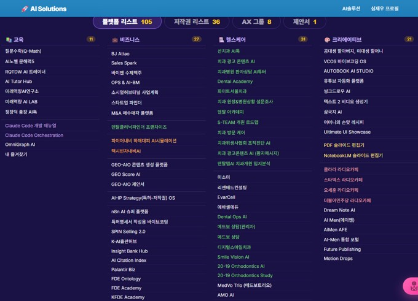
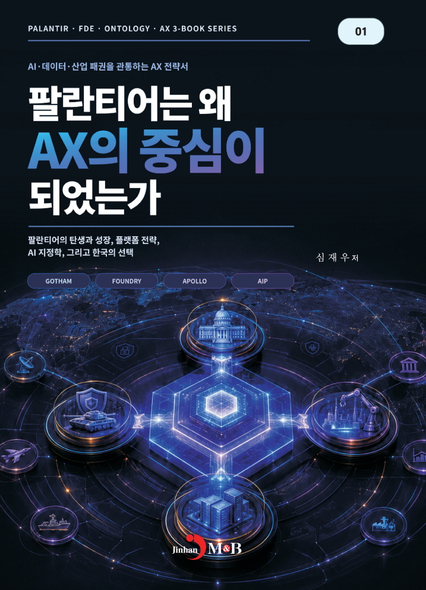
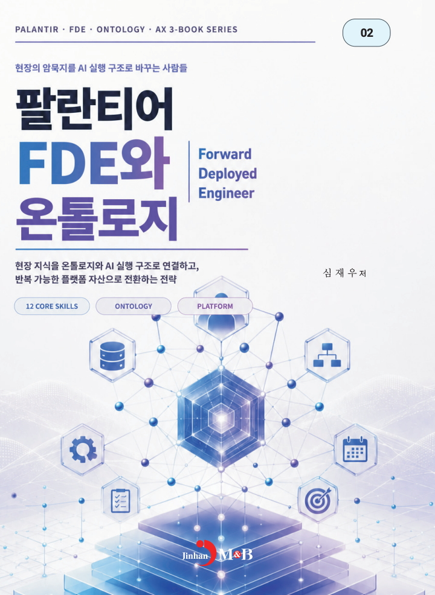
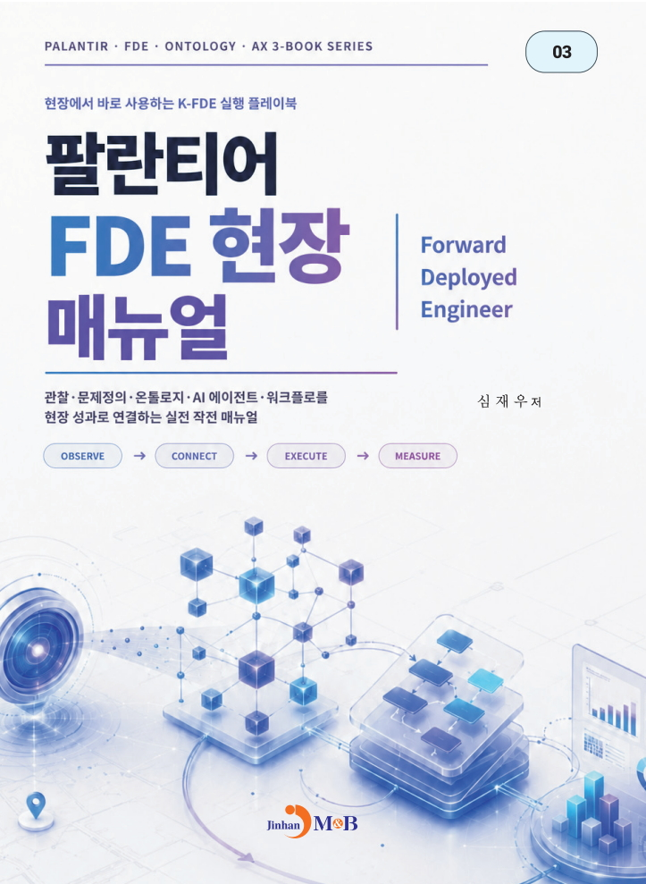
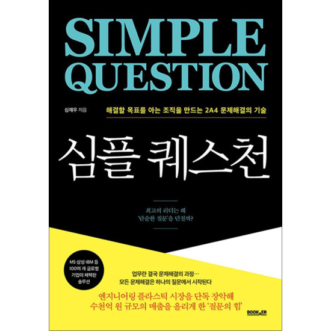
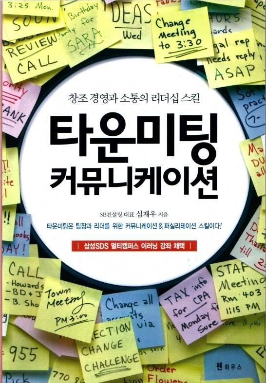
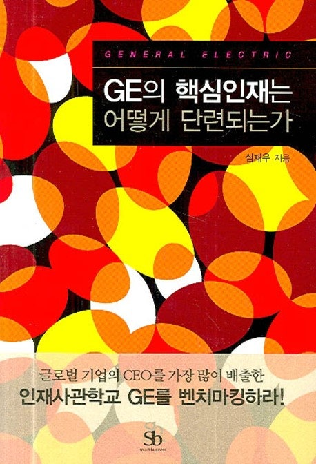

To establish · to make firm
Turn field problems into
executable assets
YABOAZ discovers field problems, structures them with evidence and ontology, executes with AI agents and workflows, and turns validated solutions into reusable platform assets.
Build with strength. Execute with AI.Understand the Field. Build with Strength.Strength that builds what lasts

The meaning of YABOAZ
Strength · solidity
The strength to build what lasts
Discover
Define the real problem from field signals and evidence.
Structure
Connect objects, relationships, and rules through ontology.
Execute
Let AI agents and workflows carry out approved actions.
Assetize
Reuse validated solutions in the next project.
YABOAZ K-FDE EXECUTION ROADMAP
A 13-stage path from field insight to reusable assets
Move from discovery and structure to AI execution, field validation, and platform assetization through one connected operating system.
Phase 1 · FDE DiscoveryPhase 2 · Field UnderstandingPhase 3 · AX Execution ArchitecturePhase 4 · Validation & Assetization
One operating system, three connected design layers
Field context becomes execution knowledge, then reusable platform structure.
13-stage roadmap
A repeatable path from customer onboarding to validated platform assets.
Ecosystem elements
Understand participants, problems, evidence, rules, actions, and outcomes.
Ontology elements
Connect objects, attributes, relations, states, events, rules, and actions.
Platform primitives
Package workflows, permissions, source tracking, KPI models, and templates.
Ten practices for reliable field execution
Evidence first, clear scope, human approval, and reusable outcomes keep every project moving.
Start with evidence
Make this principle visible in the next project decision.
Define the boundary
Make this principle visible in the next project decision.
Separate fact from hypothesis
Make this principle visible in the next project decision.
Map the ecosystem
Make this principle visible in the next project decision.
Name the objects
Make this principle visible in the next project decision.
Connect decisions to evidence
Make this principle visible in the next project decision.
Keep people in the loop
Make this principle visible in the next project decision.
Run the smallest workflow
Make this principle visible in the next project decision.
Measure the outcome
Make this principle visible in the next project decision.
Turn results into assets
Make this principle visible in the next project decision.
What the K-FDE method delivers
From field problems to 105 working platforms
Hands-on platform building across education, business, AI, content, and productivity.
105PLATFORMS36REGISTERED WORKS8AX GROUPS1OPERATING SYSTEM

The ideas behind the operating system
Field execution, problem solving, ontology, AI, leadership, collaboration, persuasion, and communication in one practical knowledge base.

VOL. 01Field Execution
Turn field signals into a clear execution path.

VOL. 02FDE Strategy
Connect field signals to an execution structure.

VOL. 03FDE Field Manual
Apply problem definition, ontology, agents, and workflows.
AI & the Future of Work
Explore the conditions AI creates for work and society.
 VOL. 05
VOL. 05Vibe Coding
Build useful platforms quickly from real needs.

VOL. 062A4 Problem Solving
Separate goals, problems, causes, and actions.

VOL. 07Leadership Communication
Align people around execution and outcomes.
Exceptional Companies
Build organizational performance through small improvements.
You & I Communication
Turn relationships and conflict into constructive dialogue.

VOL. 10Talent Development
Grow leaders and core talent through practical frameworks.
Turn your field problem into execution.
Start your first project with the 13-stage YABOAZ K-FDE operating system.